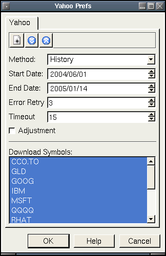
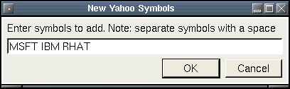

Yahoo Plugin
Description:
Historical and 10 - 20 minute delayed quotes from all yahoo
supported exchanges are available
with this plugin.
Adjustments:
Yahoo provides an Adjusted Close column in its data,
scaling prior closing prices to the most recent price based on stock
splits and dividends. For example, if a 2-for-1 split occurs halfway
through the data, the Adjusted Close price from before the split will
be half of the Close price. If the Adjustments option is checked, the
plugin will calculate the factor between the Close price and the
Adjusted Close price and apply it to Open, Close, High, Low, and
Volume. It divides the prices and multiplies the volume, so in any
case Close x Volume is the same as before the conversion. This allows
you to display continuous graphs and analyze the movement of an issue
without large jumps due to stock splits, although the caveat is that
absolute prices are a factor different from what occurred on the
exchange that day. Having said that, factoring for historical events
in this manner is a common approach for visually graphing stock
prices.
200 Bar Limit:
Most of the yahoo exchanges (except NA markets) have a 200 bar limit to
the number of historical quotes that can be downloaded at one time. A
work around for this is to download the data you need by doing it in
several chunks of 6 month intervals. So, gettting many years worth of
data would take 6 or 7 download sessions by adjusting the start and end
dates by 6 months at a time.
Input Parameters:
- Method - The type of download quote data you want:
- History - Update history using a specific date range.
- Auto History - Updates to the most recent history.
- Quote - Updates the most recent intraday delayed quote.
- End Date - The most recent date to include for update. Used only
for History method.
- Start Date - The most distant date to include for update. Used
only for History method.
- Error Retry - The number of attempts to make if an error
downloading the symbol occurs.
- Timeout - The number of seconds to wait while downloading a
symbol before moving on to the next symbol in the list.
- Adjustment - Propagate the Close/Adjusted Close factor to all
price columns (i.e. adjust for stock splits and dividends).
- Download Symbols - Select the symbols to download by highlighting
them.

Pressing the "New Symbol" button will bring up the following dialog.

Here we will be adding MSFT, IBM, RHAT to our database. Leave a
space between the symbols.
NOTE: You only have to create the symbols once and not every time
you want to download quotes.
border="0" height="32" width="32">
border="0" height="32" width="32">